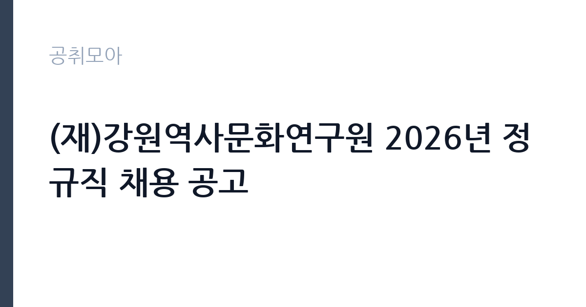

[공공기관] (재)강원역사문화연구원 2026년 정규직 채용 공고
재단법인강원역사문화연구원 · 강원 · 마감 2026-10-09 (D-11) · 출처 나라일터

한눈에 보는 모집 조건
| 기관 | 재단법인강원역사문화연구원 |
|---|---|
| 공고명 | (재)강원역사문화연구원 2026년 정규직 채용 공고 |
| 고용형태 | 정규직 |
| 근무지 | 강원 |
| 게시일 | 2026-09-28 |
| 마감일 | 2026-10-09 (D-11) |
지원자격, 이렇게 읽으세요
- 연구직 7급 2명 일반직7급 2명
- 접수 ~2026-10-09 마감
- 세부 조건은 원문 공고문 확인
연구직 7급은 역사학과 고고학, 민속학과 문화재 관련 전공 석사 이상 또는 실무 경력이 요구될 가능성이 크므로 원문 공고문에서 전공과 학위 요건을 확인하십시오. 일반직 7급은 행정 실무자로 회계와 총무, 연구지원 업무 경력이 평가됩니다. 연구기관 채용의 함정은 논문과 보고서 실적 인정 범위입니다. 주저자 여부와 게재지 수준이 평가에 반영되는 방식을 공고문에서 확인하고, 경력증명서와 학위증명서를 미리 발급받아 두십시오.
이 공고의 포인트
이 공고의 가치는 출연연구기관 정규직이라는 점입니다. 연구직과 일반직을 동시에 뽑아 전공자와 행정가 모두에게 문이 열려 있습니다. 강원학이라는 지역학 특화 분야라 향토사와 문화유산에 관심 있는 연구자에게는 전국에서도 드문 자리입니다. 2026년 채용 관련 기관 정보에 따르면 연봉 수준이 직급별로 공개된 바 있어 처우 예측이 가능합니다. 춘천 근무로 강원도 정주를 계획하는 분께는 생활과 경력을 함께 설계할 기회입니다.
전형은 어떻게 진행되나
전형은 1차 서류전형과 2차 필기시험, 3차 면접시험으로 진행되며 최종 합격자를 선발합니다. 접수 마감은 10월 9일입니다. 필기시험이 포함된 만큼 전공 시험 대비가 필요하며, 연구직은 전공 과목 중심, 일반직은 행정 실무와 소양 중심으로 출제될 가능성이 큽니다. 세부 일정과 시험 과목은 원문 공고문에서 확인하십시오.
이런 분께 추천해요
- 한국사와 고고학, 문화재 전공 석사 이상 연구자에게 맞습니다. 지역학 연구를 정식 직무로 할 수 있습니다.
- 연구기관 행정과 회계 실무자에게 일반직 자리가 맞습니다. 연구지원 행정 경력이 평가됩니다.
- 춘천 정주와 공공 연구기관 경력을 함께 원하는 분께 권합니다. 정규직이라 장기 설계가 가능합니다.
지원 전 체크리스트
- 연구직과 일반직의 응시 자격(전공·학위·경력)을 원문에서 확인했습니다. 1인 1분야 지원이 원칙인지도 확인하십시오.
- 필기시험 과목과 배점을 확인했습니다. 전공 과목 범위와 참고 문헌을 파악해 학습 계획을 세우십시오.
- 연구 실적 인정 기준(논문·보고서·주저자 여부)을 확인했습니다. 실적 목록과 증빙을 미리 정리하십시오.
- 접수 마감(10월 9일)과 제출 서류를 확인했습니다. 학위와 경력 증빙 발급에 시간이 걸리므로 서두르십시오.
모집 일정과 제출 타이밍
접수 마감은 10월 9일로 약 10일이 남았습니다. 서류 준비와 필기시험 대비를 병행해야 하므로 오늘부터 전공 복습 계획을 세우십시오. 학위증명서와 경력증명서, 연구 실적 증빙은 이번 주 안에 발급받으십시오. 필기시험일이 서류 발표 직후로 잡힐 수 있으니 서류 접수 후에도 학습을 멈추지 마시는 것이 좋습니다.
직무 이해하기: 공공기관
강원역사문화연구원은 강원도의 역사와 문화유산, 지역학(강원학)을 조사하고 연구하는 재단법인 연구기관입니다. 연구직 7급은 유적과 유물 조사, 학술 보고서 집필, 문화유산 정책 연구를 맡습니다. 일반직 7급은 연구 행정과 예산·회계, 총무와 인사 실무를 지원합니다. 발굴 조사와 학술대회, 지역 문화사업이 주요 활동이라 현장 조사와 보고서 작성 능력이 핵심입니다.
자기소개서 작성 팁
연구직 지원서는 연구 실적 목록이 핵심입니다. 논문과 보고서의 주제, 본인 기여도, 게재지를 구체적으로 쓰십시오. 강원 지역사와 연결되는 연구 관심사를 밝히면 기관 적합성이 드러납니다. 일반직은 연구지원 행정 경험과 예산·회계 실무를 수치로 쓰십시오. 출연연구기관의 공공성을 이해하고 있다는 점을 한 문장으로 보여주는 것이 좋습니다.
면접 준비 포인트
연구직 면접에서는 본인 연구 주제와 강원학의 연결 가능성을 깊이 물을 가능성이 큽니다. 박사 과정이 아닌 석사급 연구자로서의 현장 조사 역량과 보고서 작성 경험을 사례로 준비하십시오. 일반직은 연구 행정의 특수성(연구비 집행과 정산) 이해를 묻는 질문에 대비하십시오. 춘천 근무와 장기 정착 의지를 묻는다면 구체적인 생활 계획을 답변에 포함하십시오.
급여·근무조건 읽는 법
정확한 보수는 원문 공고문의 직급별 연봉표에서 확인하셔야 합니다. 참고로 2026년 채용 관련 기관 정보(강원 지역인재 채용페스타 게시)에 따르면 연구원 연봉은 18,583천 원에서 41,917천 원 범위로 안내된 바 있으며, 2025년 채용 사례에서는 7급 연구원 보수가 연봉 2,800만 원 수준으로 공지된 바 있습니다(출처: 채용 정보 게시). 각종 수당은 별도로 지급됩니다. 캠퍼스와 경력에 따라 달라질 수 있으므로 이번 공고문의 연구원 보수규정 적용액이 최종 기준입니다.
자주 묻는 질문
- 연구직과 일반직에 동시 지원할 수 있나요?
통상 1인 1분야 지원이 원칙이지만 정확한 기준은 원문 공고문에서 확인하십시오. 본인 전공과 경력에 가장 맞는 한 분야에 집중하는 것이 유리합니다. - 필기시험은 무엇을 보나요?
전형 절차는 서류와 필기, 면접 3단계이며 시험 과목과 배점은 원문 공고문에서 확인하십시오. 연구직은 전공 중심, 일반직은 행정 실무 중심으로 출제될 가능성이 큽니다. - 근무지는 어디인가요?
재단법인 강원역사문화연구원은 춘천에 있으며 근무지도 춘천입니다. 현장 조사가 있으면 도내 유적과 문화재 현장을 다니게 됩니다.
함께 보면 좋은 공고
[공공기관] 한전KPS(주)강원충북전력지사 단기노무원(강릉지점 차량순시) 채용공고(31차) — 마감 2026-10-01[공공기관] 한국폴리텍대학 광명융합기술교육원 대학운영직(경비원) 채용 공고 — 마감 2026-10-06[공공기관] 기장군도시관리공단 2026년도 체험형 청년인턴 채용 공고 — 마감 2026-10-08출처: 나라일터 공개정보를 바탕으로 공취모아가 정리한 안내글입니다. 모집 조건·일정은 변경될 수 있으니 지원 전 반드시 원문 공고문을 확인하세요. 본 글은 정보 제공용이며 합격을 보장하지 않습니다.